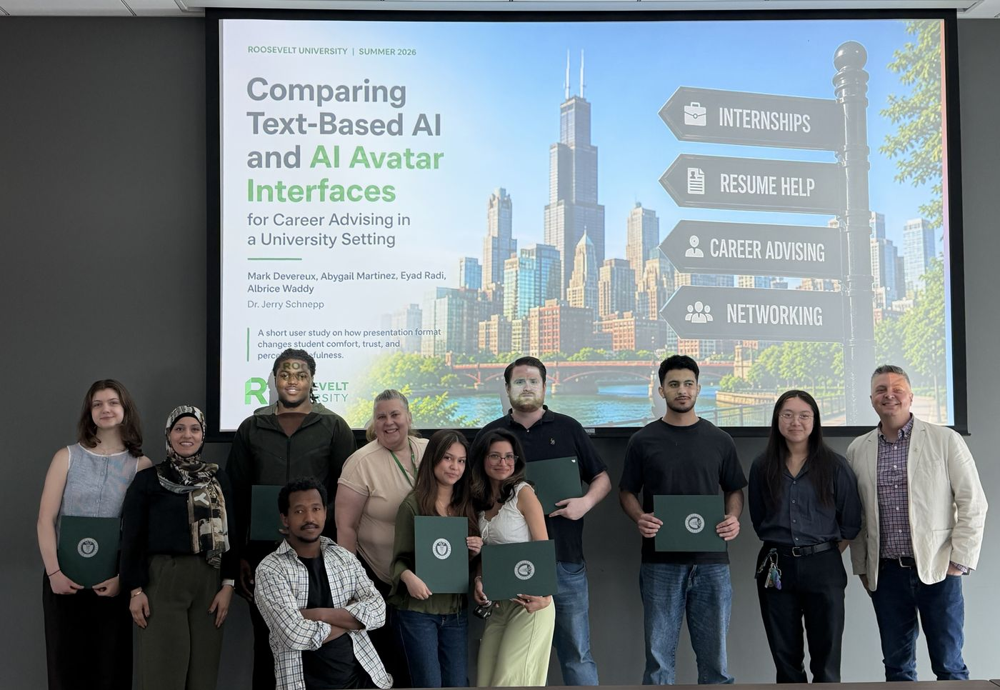

Research
I study how people learn with technology and design tools that make learning more human. My work spans AI in education, learner experience design, accessibility, and new kinds of interfaces.
AI and personalized learning
My newest work uses large language models to personalize learning, and asks how to use AI responsibly.
With support from an RU-PRIME micro-grant, I'm developing a system that uses large language models and retrieval-augmented generation (RAG) to create personalized learning experience plans. Undergraduates are part of every stage. In summer 2025, a team of student micro-interns ran learner experience design interviews to ground the system in what students actually need.

I also work on the ethics of AI. With Jason Davidson, Hilary Buttrick, and Ankur Gupta, I co-developed a framework for the ethical development and use of AI in human resource management. Other current projects with students include design heuristics for older adults and new ways to measure how efficiently students gain programming skills.
Selected work
- Davidson, J., Schnepp, J., Buttrick, H., & Gupta, A. (2026). A Framework for Ethical AI-HRM Development and Use. AI and Ethics, 6, 28. DOI
- Desta, Y. K., & Schnepp, J. (2026). Specialized design heuristics that optimize interactions for older adults. In C. Stephanidis, G. Margetis, S. Ntoa, M. Antona, & G. Salvendy (Eds.), HCI International 2026 Posters (Communications in Computer and Information Science, Vol. 3047, pp. 526–534). Springer. DOI
- Schnepp, J. (2026). Building Mission-Aligned AI Policy at an HSI. AAC&U Conference on AI and Higher Education. Atlanta, GA. Poster
- Schnepp, J. (2026). Undergraduate Research Immersion: A Two-Week Micro-Internship Experience. CRA NAIRR Pilot Expansion Conference for Minority Serving Institutions. Portland, OR. Poster
- Schnepp, J. (2026). Exploring AI-Enhanced Learning with Vibe Coding: A Computer Science Micro-Internship Project. National Conference on Undergraduate Research (NCUR). Richmond, VA. Talk
- Davidson, J., Gupta, A., & Schnepp, J. (2024). AI Echo: A framework for generative AI bias mitigation. Midwest Decision Sciences Institute Annual Conference. Youngstown, OH. Talk
Learner Experience Design
Learner Experience Design (LXD) brings user experience research into teaching.
College students today are more diverse than ever. They learn online and in person, draw on many digital resources, and arrive with different schedules, preparation, and preferences. Yet many faculty never had formal training in curriculum design. Some teach the way they were taught.
LXD gives faculty a way in. It combines user-centered design with educational theory, pedagogy, and psychology, so course decisions rest on evidence about real students. It starts with empathy: you can't design a good course for students you don't understand.
With Christian Rogers, I created a workshop series that introduces faculty to LXD. Participants interview their own students, build and analyze student personas, and use what they learn to change their courses. Faculty who complete the series can:
- Describe LXD as a set of mindsets that support curriculum development
- Build greater empathy for their students
- Develop student personas
- Interview students using the Customer Discovery method
- Make curriculum changes based on what they learn
Selected work
- Rogers, C. & Schnepp, J. (2024). Implementing Learner Experience Design in University Teaching: An Action Research Study on Enhancing Faculty-Student Engagement and Motivation. Journal of the Scholarship of Teaching and Learning, 24(4). DOI
- Schnepp, J. & Rogers, C. (2022). A Practical Approach to Learner Experience Design. International Journal of Teaching and Learning in Higher Education, 34(1). PDF
- Schnepp, J. (2025). Learner Experience Design for Curriculum Development and Increased Student Engagement. Georgia State University's Perimeter College unDistance Learning Conference. Atlanta, GA. Keynote Slides Breakout worksheets
- Schnepp, J. & Rogers, C. (2024). Learner Experience Design: A Human-Centered Approach to Collaborative Curricular Innovation. 8th Canadian International Conference on Advances in Education, Teaching & Technology. Toronto, Canada. Keynote
- Schnepp, J. & Rogers, C. (2023). From Learner Insights to Actionable Recommendations: A Guide for Effective Learner Interviews. Educause. Chicago, IL. Poster
STEM and computational thinking
I came to computer science from art, so I know how hard the first steps into programming can feel.
That experience drives my work in STEM education, especially for students who have struggled with STEM before. I meet students where they are, with creative projects that build computational thinking.
Starting in 2016, Thomas Roberts and I designed and ran Interactive Electronic Art, a weeklong summer camp at the Toledo Museum of Art. Students learned to program Arduino components and built them into their own sculptures and paintings. They spent four days at the museum, coding and touring the galleries for ideas, with challenges that grew more complex each day. On the last day they visited Bowling Green State University to see art and robotics research and present their projects.
The camp had two goals: give students access to coding, and build communication, collaboration, critical thinking, and creativity through problem solving. Our article about it won the ITEEA's Top Overall Article award.
Selected work
- Roberts, T. & Schnepp, J. (2020). Building Problem-Solving Skills through STEAM. Technology and Engineering Teacher, 79(8), 8. PDF Top Overall Article, ITEEA
- Schnepp, J. & Roberts, T. (2020). Heroes and Villains: A Virtual Summer Camp Activity for Remote Learners. Elementary STEM Journal, 25(1), 28.
- Roberts, T., & Schnepp, J. (2020). Using STEAM to Develop Middle School Students’ Computational Thinking. The Annual Meeting of the School Science and Mathematics Association. Minneapolis, MN. Talk
- Roberts, T., Schnepp, J., Crabtree, H. & Daniels, S. (2019). STEAMing through the summer: An art and robotics informal learning experience. Hawaii International Conference on Education. Honolulu, HI. Talk
- Bostic, J., Sondergeld, T., & Schnepp, J. (2020). Broadening the problem-solving measures: Moving online. Proceedings for the annual meeting of the School Science and Mathematics Association. Paper presented at the annual meeting of the School Science and Mathematics Association (pp. 59-66). Minneapolis, MN. Paper
Point Barter: trading points for hints
Point Barter is an online quiz system that lets students trade points for hints.
Every question has a point value. A student who is stuck can barter: the system deducts points and shows a hint. A question can have several hints. A correct answer earns whatever points remain.
The idea comes from strategy games, where players trade currency for clues or power-ups. It shows students that there is more than one path to success, rewards strategic thinking, and gives continual feedback, so students learn while they are being assessed.
In a pilot study, students who used Point Barter for an exam overwhelmingly reported a positive experience. Many said it reduced their test anxiety, and 95% said they would recommend it for other classes.
Selected work
- Schnepp, J. & Rogers, C. (2015). Just Give Me a Hint! An Alternative Testing Approach for Simultaneous Assessment and Learning. Smart Education and Smart e-Learning (pp.141-150). Springer, Cham. Volume
- Rogers, C. & Schnepp, J. (2015). Student Perceptions of an Alternative Testing Method: Hints as an Option for Exam Questions. Computers in Education Journal, XXIV. PDF
- Rogers, C., & Schnepp, J. (2014). Teaching During The Final Exam: How Providing Hints Can Help. In 2014 ASEE Annual Conference & Exposition (pp. 24-1159). PDF
- Schnepp, D., Schnepp, J. & Petrik, M. (2014). Point Bartering for Exam Hints: A Case Study with Medical Coding Students. The American Health Information Management Association Faculty Development Institute / Assembly on Education (FDI/AOE) HIM Education: New Curriculum and Competencies to Advance the HIM Workforce. Chicago, IL. Talk
- Schnepp, J. & Rogers, C. (2014). Gamification Techniques for Academic Assessment. Proceedings of the 44th Annual Conference of the International Society for Exploring Teaching and Learning. Paper
EASEL: reflection in the moment
EASEL (Education through Application-Supported Experiential Learning) is a mobile platform that prompts students to reflect before, during, and after a learning experience.
Instructors set reflection prompts that fire based on time, location, or both, using a phone's GPS and network connection. A student gets a notification, swipes it open, and responds with text, a voice recording, a photo, or video. Instructors can anticipate reflection opportunities and give direct feedback, which keeps the student-instructor connection at the center.
Picture an online student who has to interview an industry professional. EASEL reminds them before the interview, can offer material to review on arrival, and prompts them to reflect as soon as the interview ends. The instructor then reviews their responses.
Selected work
- Schnepp, J. & Rogers, C. (2017). Evaluating the Acceptability and Usability of EASEL: A Mobile Application that supports Guided Reflection for Experiential Learning Activities. Journal of Information Technology Education: Innovations in Practice,16:1. Article
- Rogers, C., Renguette, C., Cooper, S., Renshaw, S., Seig, M.T., & Schnepp J. (2018). Developing an Adaptive Mobile Platform in Family Medicine Field Experiences: User Perceptions. Smart Education and Smart E-Learning (pp. 37-50). Springer, Cham. Chapter
- Renguette, C., Rogers, C., Schnepp, J. & Seig, M.T. (2018). Experiential Learning Dual Design: Using User Experiences to Teach UX. International Journal of The World Association for Case Method Research & Application, 3, 145-152.
- Schnepp, J., Renguette, C. & Rogers, C. (2017). EASEL: Education through Application-Supported Experiential Learning. Cyberlearning 2017: What’s Next? Making Connections to Shape the Future. Arlington, VA. Poster
- Schnepp, J. & Rogers, C. (2016). Supporting Directed Reflection with Technology in Field Experiences. Proceedings of the 46th Annual Conference of the International Society for Exploring Teaching and Learning.
Sing N Sketch: drawing with your voice
Sing N Sketch is a touchscreen app that lets you sing and draw at the same time.
You paint with a finger while the microphone listens. The software identifies the note you sing, then maps its pitch to the stroke's color and its volume to the brush size. Sing low and the stroke is deep red. Sing higher and it shifts toward blue.
That mapping is just one option. Any audio property (pitch, amplitude, attack, decay, presence) can drive any visual one (hue, value, saturation, pressure, size, shape). Two people can collaborate, one singing and one sketching. An artist can sing along with a recording and let the song shape the picture. Children can explore color and music together.
Turn on the microphone and sing while you draw. Low notes paint red and high notes paint blue. Sing louder for a thicker line. Until then, the height of your stroke stands in for pitch. Your audio stays in your browser and is never recorded or sent.
Selected work
- Schnepp, J. (2016). Toward a Multimodal Interface that Combines Singing and Drawing. In AHFE 2016: Applied human factors and ergonomics: proceedings of the 7th International Conference on Applied Human Factors and Ergonomics (AHFE 2016) and the Affiliated Conferences, July 27-31, Walt Disney World, Florida, USA (pp. 1-1). Springer.
- Schnepp, J. (2016). A Survey of Unconventional Computer Interfaces. The College of Technology, Architecture and Applied Engineering Research Fair. Bowling Green, OH. Poster
- Schnepp, J. (2014). Trends in Multimodal Human-Computer Interfaces. Annual Conference of the Association of Technology Management and Applied Engineering. St. Louis, MO. Talk
Sign language synthesis
I work with an international team to build software that turns English into animations of American Sign Language (ASL).
ASL is the language of the Deaf community in North America. It has its own grammar, as different from English as any spoken language. It is also visual and gestural, while English is spoken or written. Bridging the two takes computer graphics, linguistics, natural language processing, and human-computer interaction, so the work is deeply collaborative.
The software has three main parts: an animation system, a language representation, and a user interface. My dissertation at DePaul University focused on representing nonmanual signals in ASL: the facial expressions and head movements that carry grammar and emotion. More recently, my students and I have designed and tested a sign language learning app.
Selected work
- McDonald, J., Wolfe, R., Schnepp, J., Hochgesang, J., Gorman Jamrozik, D., Stumbo, M., Berke, L., Bialek, M., & Thomas, F. (2016). An automated technique for real-time production of lifelike animations of American Sign Language. Universal Access in the Information Society, 15(4), 551-566. DOI
- Schnepp, J., Wolfe, R., Brionez, G., Baowidan, S., Johnson, R., & McDonald, J. (2020). Human-centered design for a sign language learning application. Proceedings of the 13th ACM International Conference on PErvasive Technologies Related to Assistive Environments (pp. 1-5).
- Wolfe, R., McDonald, J., Toro, J., Baowidan, S., Moncrief, R., & Schnepp, J. (2015). Promoting better deaf/hearing communication through an improved interaction design for fingerspelling practice. In International conference on universal access in human-computer interaction (pp. 495-505). Springer, Cham. DOI
- Schnepp, J., Wolfe, R., McDonald, J., & Toro, J. (2013). Generating Co-occurring Facial Nonmanual Signals in Synthesized American Sign Language. Proceedings of the International Conference on Computer Graphics Theory and Applications and International Conference on Information Visualization Theory and Applications (pp 407-416). SciTePress. Paper
- Schnepp, J. C., Wolfe, R. J., McDonald, J. C., & Toro, J. A. (2012). Combining emotion and facial nonmanual signals in synthesized american sign language. In Proceedings of the 14th international ACM SIGACCESS conference on Computers and accessibility (pp. 249-250). Paper
- Wolfe, R., Cook, P., McDonald, J. C., & Schnepp, J. (2011). Linguistics as structure in computer animation: Toward a more effective synthesis of brow motion in American Sign Language. Sign Language & Linguistics, 14(1), 179-199. Paper